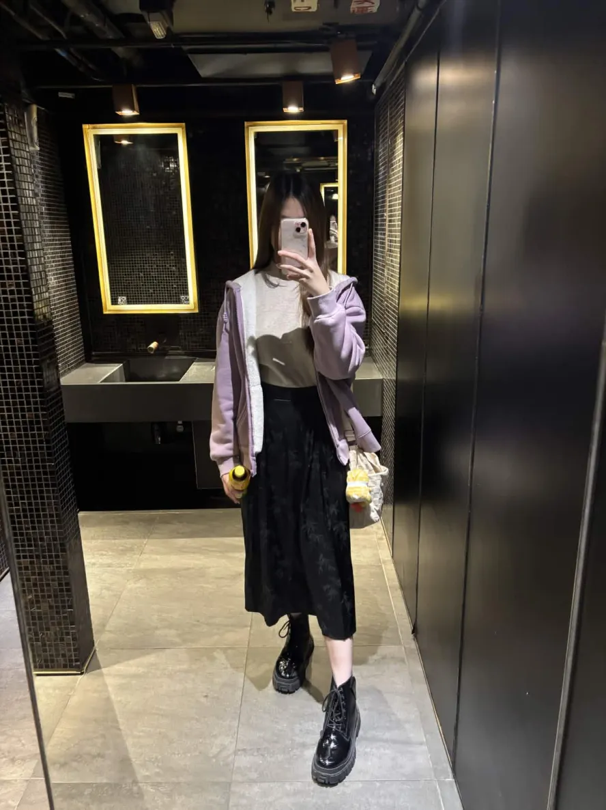
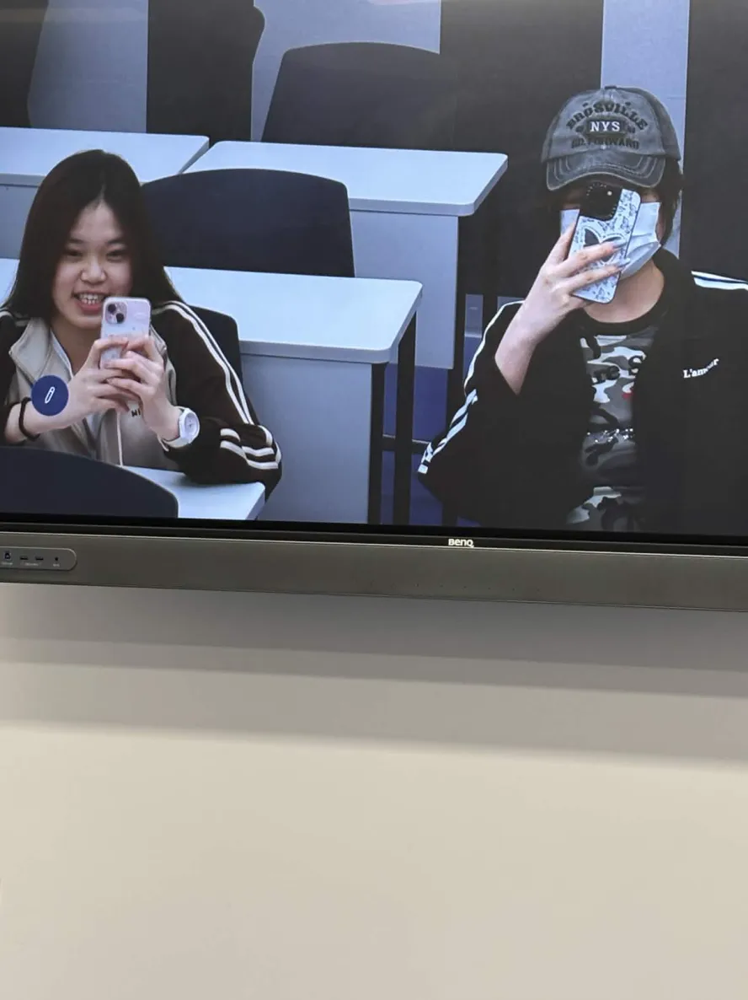
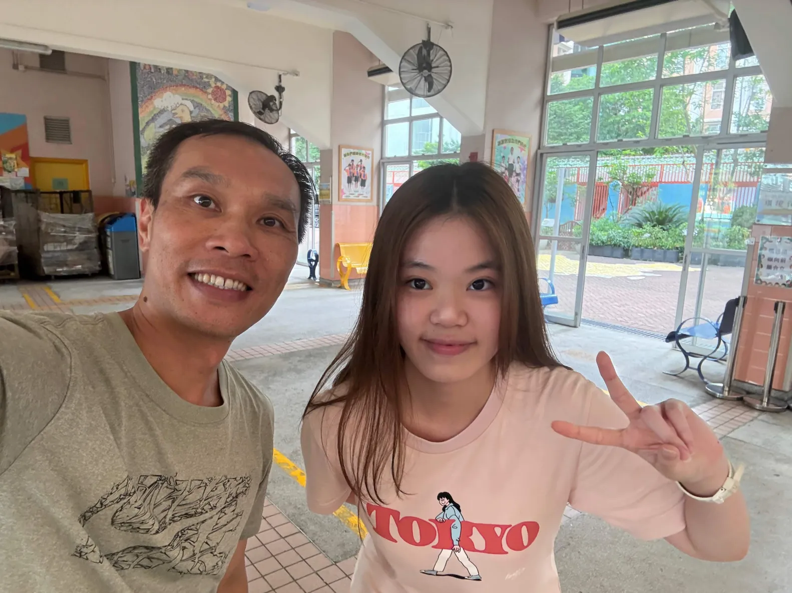
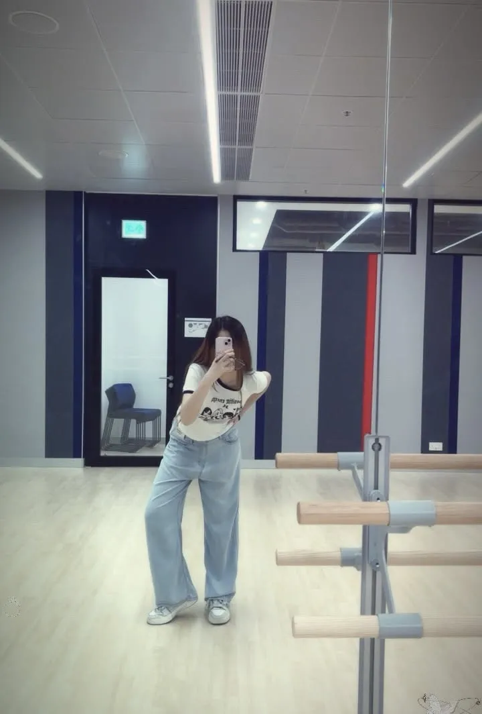
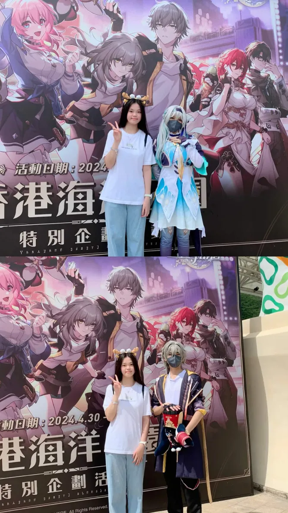

I love recording myself in all sorts of interesting situations.
This photo was taken during my last school trip in middle school. It was a sunny day, and we were young at the time.

That was after I'd squeezed in some time from my busy schedule to hang out with old classmates, and to make the most of my outfit for the day, I wandered around aimlessly. That's how this mirror selfie in the bathroom came about 😂

They discovered that the classroom screens at school had cameras facing the desks, and started taking fun selfies with their classmates.

Six years later, I reunited with my elementary school homeroom teacher. The skills we talked about back then are still relevant today, and we still had a lot to discuss when we met.
My friend did my makeup for the first time, and I started to feel narcissistic for a long time afterward.

While filming at school, they rented a dance studio and started taking hilarious mirror selfies.

One of my favorite games collaborated with Ocean Park, and I met some cosplayers from the game on the day of the collaboration. They perfectly embodied the characters, and I took many great photos with them. I even got their Instagram account!